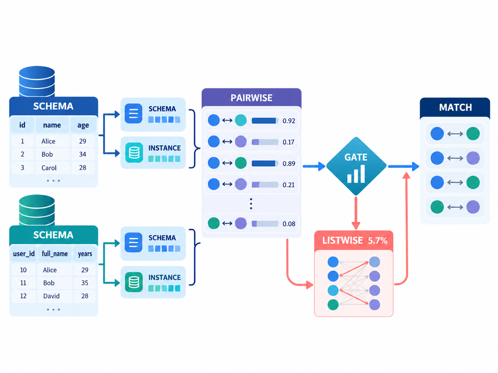
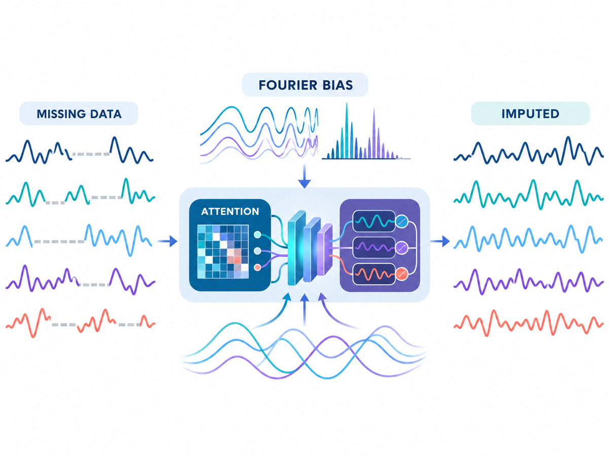
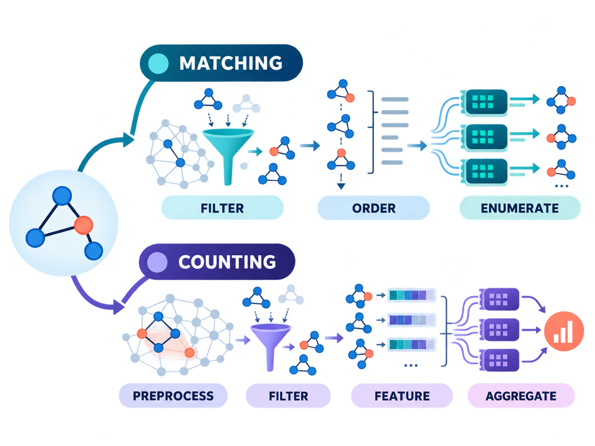
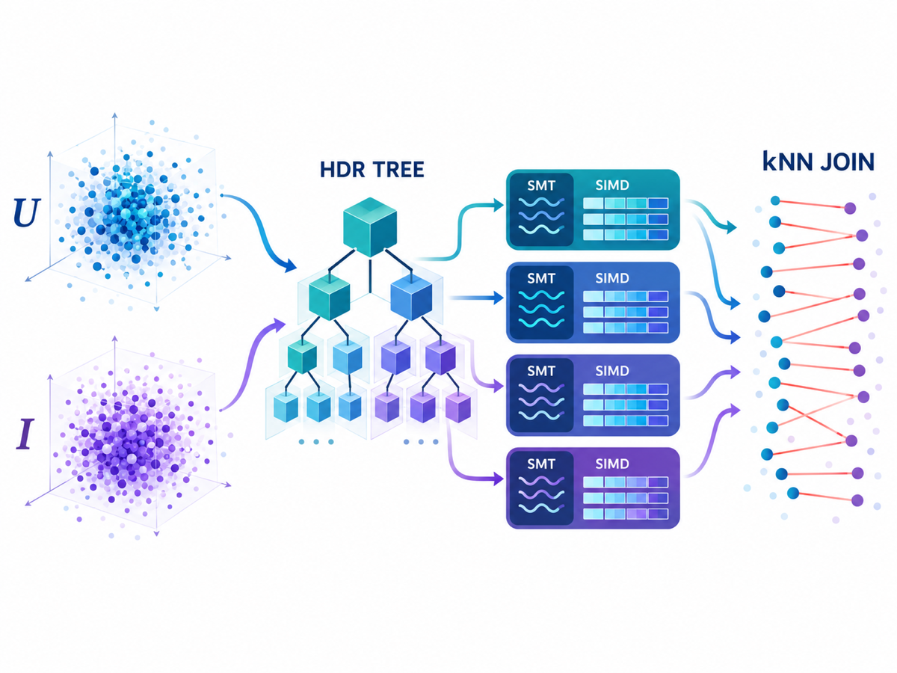

Publications
-
2026

Data Systems · Schema MatchingCorrespondences as Decisions: JevNexus for Decision-Centric Schema MatchingAbstract
Schema matching increasingly uses generative language models to rerank retrieved column candidates, although the underlying task is a bounded correspondence decision. We present JevNexus, which combines typed pairwise decisions with schema/instance evidence and invokes listwise refinement only when the evidence disagrees and the fused margin is small. The evaluation covers 561 cases from six benchmark families. JevNexus obtains dataset-macro MRR and Hits@1 of 0.930 and 0.909, compared with 0.926 and 0.903 for Magneto, while reducing mean latency from 123.452 to 15.929 seconds (7.750). Paired analysis finds no statistically significant difference in either MRR or Hits@1. The gate invokes listwise refinement for only 5.665% of source columns and avoids the degradation caused by unconditional refinement.
-
2026

Time Series · ImputationFADTI: Fourier and Attention Driven Diffusion for Multivariate Time Series ImputationAbstract
Multivariate time series imputation is fundamental in applications such as healthcare, traffic forecasting, and biological modeling, where sensor failures and irregular sampling lead to pervasive missing values. Existing Transformer- and diffusion-based imputers achieve strong performance, but they often rely mainly on time-domain modeling and lack adaptive spectral bias for recovering structured temporal gaps. We propose FADTI, a Fourier- and attention-driven diffusion framework for multivariate time series imputation. FADTI introduces a Fourier Bias Projection (FBP) module that injects learnable frequency-aware bias into intermediate hidden states during denoising. It projects intermediate hidden states onto Fourier bases, avoiding direct spectral estimation from masked or zero-filled inputs. With DFT, STFT, and FSST instantiations, FBP captures global periodicity, localized time–frequency variations, and non-stationary oscillatory patterns. By coupling FBP with self-attention and gated convolution, FADTI integrates frequency-domain guidance, temporal dependency modeling, and probabilistic denoising in a unified framework. Experiments on multiple benchmarks, including a new biological imputation benchmark, show that FADTI improves accuracy, uncertainty estimation, and sampling efficiency, especially under high missing rates and structured missing patterns.
-
2026

Graphs · Subgraph LearningAlgorithmic and Learning-based Approaches to Subgraph Matching and Counting: A SurveyAbstract
Subgraph matching and subgraph counting are fundamental graph analysis problems that underpin many graph analytics tasks. However, subgraph isomorphism is NP-complete, making both exact and approximate solutions computationally challenging on large, complex, and dynamic graphs. A large body of work ranges from classical backtracking and decomposition-based algorithms to sampling- and synopsis-based estimators, learning-based approaches built on graph neural networks, and GPU-accelerated frameworks. This survey provides a unified and structured overview of recent advances in subgraph matching and subgraph counting. We categorise existing methods into two general templates: a Filter-Order-Enumerate (FoE) framework for subgraph matching and a Preprocess-Filter-Feature-Aggregate (PFFA) framework for subgraph counting. Within these templates, we classify algorithmic and learning-based techniques, discuss key design choices such as candidate filtering, query ordering, search-space enumeration, estimator construction, and parallelization, and summarize representative GPU-based accelerators. We conclude by outlining current trends and open problems, and highlighting connections between matching and counting that can guide future research.
-
2023

Data Systems · kNN JoinkNN Join for Dynamic High-Dimensional Data: A Parallel ApproachAbstract
The k nearest neighbor (kNN) join operation is a fundamental task that combines two high-dimensional databases, enabling data points in the User dataset U to identify their k nearest neighbor points from the Item dataset I. This operation plays a crucial role in various domains, including knowledge discovery, data mining, similarity search applications, and scientific research. However, exact kNN search in high-dimensional spaces is computationally demanding, and existing sequential methods face challenges in handling large datasets. In this paper, we propose an efficient parallel solution for dynamic kNN join over high-dimensional data, leveraging the high-dimensional R tree (HDR Tree) for improved efficiency. Our solution harnesses the power of Simultaneous Multi-Threading (SMT) technologies and Single-Instruction-Multiple-Data (SIMD) instructions in modern CPUs for parallelisation. Importantly, our research is the first to introduce parallel computation for exact kNN join over high-dimensional data. Experimental results demonstrate that our proposed approach outperforms the sequential HDR Tree method by up to 1.2 times with a single thread. Moreover, our solution provides near-linear scalability as the number of threads increases.